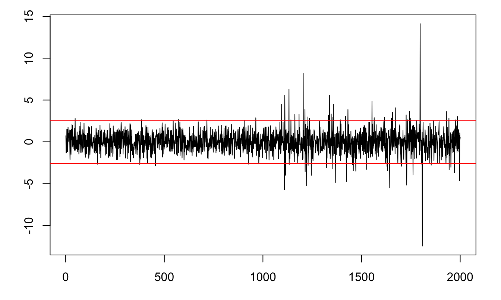
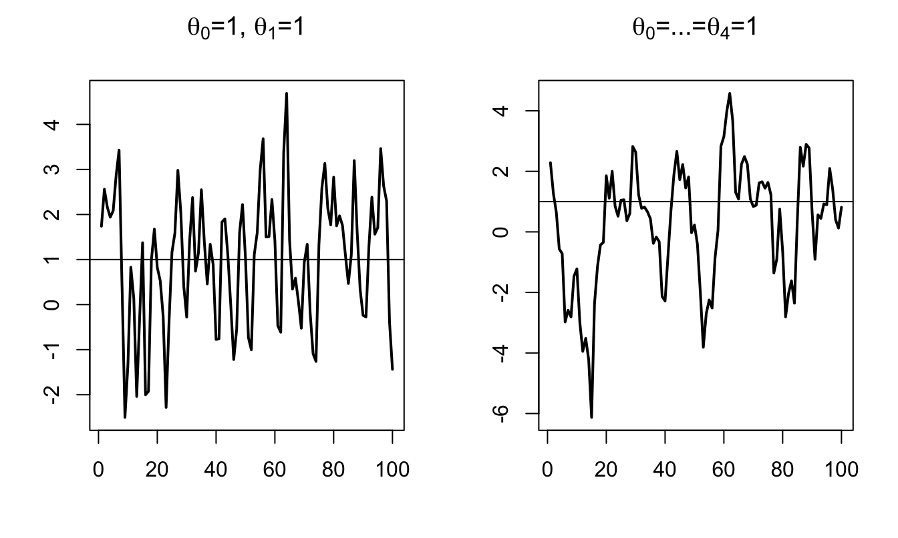
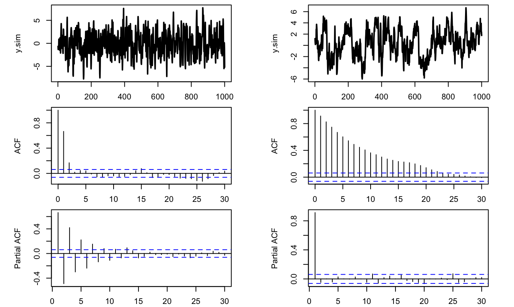

Chapter 8 Time Series
8.1 Introduction to time series
A time series is an infinite sequence of random variables indexed by time: \(\{y_t\}_{t=-\infty}^{+\infty}=\{\dots, y_{-2},y_{-1},y_{0},y_{1},\dots,y_t,\dots\}\), \(y_i \in \mathbb{R}^k\). In practice, we only observe samples, typically: \(\{y_{1},\dots,y_T\}\).
Standard time series models are built using shocks that we will often denote by \(\varepsilon_t\). Typically, \(\mathbb{E}(\varepsilon_t)=0\). In many models, the shocks are supposed to be i.i.d., but there exist other (less restrictive) notions of shocks. In particular, the definition of many processes is based on white noises:
Definition 8.1 (White noise) The process \(\{\varepsilon_t\}_{t \in] -\infty,+\infty[}\) is a white noise if, for all \(t\):
- \(\mathbb{E}(\varepsilon_t)=0\),
- \(\mathbb{E}(\varepsilon_t^2)=\sigma^2<\infty\) and
- for all \(s\ne t\), \(\mathbb{E}(\varepsilon_t \varepsilon_s)=0\).
Another type of shocks that are commonly used are Martingale Difference Sequences:
Definition 8.2 (Martingale Difference Sequence) The process \(\{\varepsilon_t\}_{t = -\infty}^{+\infty}\) is a martingale difference sequence (MDS) if \(\mathbb{E}(|\varepsilon_{t}|)<\infty\) and if, for all \(t\), \[ \underbrace{\mathbb{E}_{t-1}(\varepsilon_{t})}_{\mbox{Expectation conditional on the past}}=0. \]
By definition, if \(y_t\) is a martingale, then \(y_{t}-y_{t-1}\) is a MDS.
Example 8.1 (ARCH process) The Autoregressive conditional heteroskedasticity (ARCH) process is an example of shock that satisfies the MDS definition but that is not i.i.d.: \[ \varepsilon_{t} = \sigma_t \times z_{t}, \] where \(z_t \sim i.i.d.\,\mathcal{N}(0,1)\) and \(\sigma_t^2 = w + \alpha \varepsilon_{t-1}^2\).
Example 8.2 A (weak) white noise process is not necessarily a MDS. This is for instance the following process: \[ \varepsilon_{t} = z_t + z_{t-1}z_{t-2}, \] where \(z_t \sim i.i.d.\mathcal{N}(0,1)\).
In the following, to simplify the exposition, we will essentially consider strong white noises. A strong white noise is a particular case of white noise where the \(\varepsilon_{t}\)’s are serially independent. Using the law of iterated expectation, it can be shown that a strong white noise is a martingale difference sequence. Indeed, when the \(\varepsilon_{t}\)’s are serially independent, we have that \(\mathbb{E}(\varepsilon_{t}|\varepsilon_{t-1},\varepsilon_{t-2},\dots)=\mathbb{E}(\varepsilon_{t})=0\).
Let us now introduce the lag operator. The lag operator, denoted by \(L\), is defined on the time series space and is defined by: \[\begin{equation} L: \{y_t\}_{t=-\infty}^{+\infty} \rightarrow \{w_t\}_{t=-\infty}^{+\infty} \quad \mbox{with} \quad w_t = y_{t-1}.\tag{8.1} \end{equation}\]
We have: \(L^2 y_t = y_{t-2}\) and, more generally, \(L^k y_t = y_{t-k}\).
Consider a time series \(y_t\) defined by \(y_t = \mu + \phi y_{t-1} + \varepsilon_t\), where the \(\varepsilon_t\)’s are i.i.d. \(\mathcal{N}(0,\sigma^2)\). Using the lag operator, the dynamics of \(y_t\) can be expressed as follows: \[ (1-\phi L) y_t = \mu + \varepsilon_t. \]
It is easily checked that we have \(L^2 y_t = y_{t-2}\) and, generally, \(L^k y_t = y_{t-k}\).
If it exists, the unconditional (or marginal) mean of the random variable \(y_t\) is given by: \[ \mu_t := \mathbb{E}(y_t) = \int_{-\infty}^{\infty} y_t f_{Y_t}(y_t) dy_t, \] where \(f_{Y_t}\) is the unconditional (or marginal) density of \(y_t\). Similarly, if it exists, the unconditional (or marginal) variance of the random variable \(y_t\) is: \[ \mathbb{V}ar(y_t) = \int_{-\infty}^{\infty} (y_t - \mathbb{E}(y_t))^2 f_{Y_t}(y_t) dy_t. \]
Definition 8.3 (Autocovariance) The \(j^{th}\) autocovariance of \(y_t\) is given by: \[\begin{eqnarray*} \gamma_{j,t} &:=& \int_{-\infty}^{\infty} \int_{-\infty}^{\infty} \dots \int_{-\infty}^{\infty} [y_t - \mathbb{E}(y_t)][y_{t-j} - \mathbb{E}(y_{t-j})] \times\\ && f_{Y_t,Y_{t-1},\dots,Y_{t-j}}(y_t,y_{t-1},\dots,y_{t-j}) dy_t dy_{t-1} \dots dy_{t-j} \\ &=& \mathbb{E}([y_t - \mathbb{E}(y_t)][y_{t-j} - \mathbb{E}(y_{t-j})]), \end{eqnarray*}\] where \(f_{Y_t,Y_{t-1},\dots,Y_{t-j}}(y_t,y_{t-1},\dots,y_{t-j})\) is the joint distribution of \(y_t,y_{t-1},\dots,y_{t-j}\).
In particular, \(\gamma_{0,t} = \mathbb{V}ar(y_t)\).
Definition 8.4 (Covariance stationarity) The process \(y_t\) is covariance stationary —or weakly stationary— if, for all \(t\) and \(j\), \[ \mathbb{E}(y_t) = \mu \quad \mbox{and} \quad \mathbb{E}\{(y_t - \mu)(y_{t-j} - \mu)\} = \gamma_j. \]
Figure 8.1 displays the simulation of a process that is not covariance stationary. This process follows \(y_t = 0.1t + \varepsilon_t\), where \(\varepsilon_t \sim\,i.i.d.\,\mathcal{N}(0,1)\). Indeed, for such a process, we have: \(\mathbb{E}(y_t)=0.1t\), which depends on \(t\).

Figure 8.1: Example of a process that is not covariance stationary (\(y_t = 0.1t + \varepsilon_t\), where \(\varepsilon_t \sim \mathcal{N}(0,1)\)).
Definition 8.5 (Strict stationarity) The process \(y_t\) is strictly stationary if, for all \(t\) and all sets of integers \(J=\{j_1,\dots,j_n\}\), the distribution of \((y_{t},y_{t+j_1},\dots,y_{t+j_n})\) depends on \(J\) but not on \(t\).
The following process is covariance stationary but not strictly stationary: \[ y_t = \mathbb{I}_{\{t<1000\}}\varepsilon_{1,t}+\mathbb{I}_{\{t\ge1000\}}\varepsilon_{2,t}, \] where \(\varepsilon_{1,t} \sim \mathcal{N}(0,1)\) and \(\varepsilon_{2,t} \sim \sqrt{\frac{\nu - 2}{\nu}} t(\nu)\) and \(\nu = 4\).

Figure 8.2: Example of a process that is covariance stationary but not strictly stationary. The red lines delineate the 99% confidence interval of the standard normal distribution (\(\pm 2.58\)).
Proposition 8.1 If \(y_t\) is covariance stationary, then \(\gamma_j = \gamma_{-j}\).
Proof. Since \(y_t\) is covariance stationary, the covariance between \(y_t\) and \(y_{t-j}\) (i.e \(\gamma_j\)) is the same as that between \(y_{t+j}\) and \(y_{t+j-j}\) (i.e. \(\gamma_{-j}\)).
Definition 8.6 (Auto-correlation) The \(j^{th}\) auto-correlation of a covariance-stationary process is: \[ \rho_j = \frac{\gamma_j}{\gamma_0}. \]
Consider a long historical time series of the Swiss GDP growth, taken from the Jordà, Schularick, and Taylor (2017) dataset.18

Figure 8.3: Annual growth rate of Swiss GDP, based on the Jorda-Schularick-Taylor Macrohistory Database.

Figure 8.4: For order \(j\), the slope of the blue line is, approximately, \(\hat{\gamma}_j/\widehat{\mathbb{V}ar}(y_t)\), where hats indicate sample moments.
Definition 8.7 (Mean ergodicity) The covariance-stationary process \(y_t\) is ergodic for the mean if: \[ \mbox{plim}_{T \rightarrow +\infty} \frac{1}{T}\sum_{t=1}^T y_t = \mathbb{E}(y_t). \]
Definition 8.8 (Second-moment ergodicity) The covariance-stationary process \(y_t\) is ergodic for second moments if, for all \(j\): \[ \mbox{plim}_{T \rightarrow +\infty} \frac{1}{T}\sum_{t=1}^T (y_t-\mu) (y_{t-j}-\mu) = \gamma_j. \]
It should be noted that ergodicity and stationarity are different properties. Typically if the process \(\{x_t\}\) is such that, \(\forall t\), \(x_t \equiv y\), where \(y \sim\,\mathcal{N}(0,1)\) (say), then \(\{x_t\}\) is stationary but not ergodic.
Theorem 8.1 (Central Limit Theorem for covariance-stationary processes) If process \(y_t\) is covariance stationary and if the series of autocovariances is absolutely summable (\(\sum_{j=-\infty}^{+\infty} |\gamma_j| <\infty\)), then: \[\begin{eqnarray} \bar{y}_T \overset{m.s.}{\rightarrow} \mu &=& \mathbb{E}(y_t) \tag{8.2}\\ \mbox{lim}_{T \rightarrow +\infty} T \mathbb{E}\left[(\bar{y}_T - \mu)^2\right] &=& \sum_{j=-\infty}^{+\infty} \gamma_j \tag{8.3}\\ \sqrt{T}(\bar{y}_T - \mu) &\overset{d}{\rightarrow}& \mathcal{N}\left(0,\sum_{j=-\infty}^{+\infty} \gamma_j \right) \tag{8.4}. \end{eqnarray}\]
[Mean square (m.s.) and distribution (d.) convergences: see Definitions 9.19 and 9.17.]
Proof. By Proposition 9.8, Eq. (8.3) implies Eq. (8.2). For Eq. (8.3), see Appendix 9.5. For Eq. (8.4), see Anderson (1971), p. 429.
Definition 8.9 (Long-run variance) Under the assumptions of Theorem 8.1, the limit appearing in Eq. (8.3) exists and is called long-run variance. It is denoted by \(S\), i.e.: \[ S = \Sigma_{j=-\infty}^{+\infty} \gamma_j = \mbox{lim}_{T \rightarrow +\infty} T \mathbb{E}[(\bar{y}_T - \mu)^2]. \]
If \(y_t\) is ergodic for second moments (see Def. 8.8), a natural estimator of \(S\) is: \[\begin{equation} \hat\gamma_0 + 2 \sum_{\nu=1}^{q} \hat\gamma_\nu, \tag{8.5} \end{equation}\] where \(\hat\gamma_\nu = \frac{1}{T}\sum_{\nu+1}^{T} (y_t - \bar{y})(y_{t-\nu} - \bar{y})\).
However, for small samples, Eq. (8.5) does not necessarily result in a positive definite matrix. Newey and West (1987) have proposed an estimator that does not have this defect. Their estimator is given by: \[\begin{equation} S^{NW}=\hat\gamma_0 + 2 \sum_{\nu=1}^{q}\left(1-\frac{\nu}{q+1}\right) \hat\gamma_\nu.\tag{8.6} \end{equation}\]
Loosely speaking, Theorem 8.1 says that, for a given sample size, the higher the “persistency” of a process, the lower the accuracy of the sample mean as an estimate of the population mean. To illustrate, consider three processes that feature the same marginal variance (equal to one, say), but different autocorrelations: 0%, 70%, and 99.9%. Figure 8.5 displays simulated paths of such three processes. It indeed appears that, the larger the autocorrelation of the process, the further the sample mean (dashed red line) from the population mean (red solid line).
The same type of simulations can be performed using this ShinyApp (use panel “AR(1) Simulation”).

Figure 8.5: The three samples have been simulated using the following data generating process: \(x_t = \mu + \rho (x_{t-1}-\mu) + \sqrt{1-\rho^2}\varepsilon_t\), where \(\varepsilon_t \sim \mathcal{N}(0,1)\). Case A: \(\rho = 0\); Case B: \(\rho = 0.7\); Case C: \(\rho = 0.999\). In the three cases, \(\mathbb{E}(x_t)=\mu=2\) and \(\mathbb{V}ar(x_t)=1\).
8.2 Univariate processes
8.2.1 Moving Average (MA) processes
Definition 8.10 Consider a white noise process \(\{\varepsilon_t\}_{t = -\infty}^{+\infty}\) (Def. 8.1). Then \(y_t\) is a first-order moving average process if, for all \(t\): \[ y_t = \mu + \varepsilon_t + \theta \varepsilon_{t-1}. \]
If \(\mathbb{E}(\varepsilon_t^2)=\sigma^2\), it is easily obtained that the unconditional mean and variances of \(y_t\) are: \[ \mathbb{E}(y_t) = \mu, \quad \mathbb{V}ar(y_t) = (1+\theta^2)\sigma^2. \]
The first auto-covariance is: \[ \gamma_1=\mathbb{E}\{(y_t - \mu)(y_{t-1} - \mu)\} = \theta \sigma^2. \]
Higher-order auto-covariances are zero (\(\gamma_j=0\) for \(j>1\)). Therefore: An MA(1) process is covariance-stationary (Def. 8.4).
For a MA(1) process, the autocorrelation of order \(j\) (see Def. 8.6) is given by: \[ \rho_j = \left\{ \begin{array}{lll} 1 &\mbox{ if }& j=0,\\ \theta / (1 + \theta^2) &\mbox{ if }& j = 1\\ 0 &\mbox{ if }& j>1. \end{array} \right. \]
Notice that process \(y_t\) defined through: \[ y_t = \mu + \varepsilon_t +\theta \varepsilon_{t-1}, \] where \(\mathbb{V}ar(\varepsilon_t)=\sigma^2\), has the same mean and autocovariances as \[ y_t = \mu + \varepsilon^*_t +\frac{1}{\theta}\varepsilon^*_{t-1}, \] where \(\mathbb{V}ar(\varepsilon^*_t)=\theta^2\sigma^2\). That is, even if we perfectly know the mean and auto-covariances of this process, it is not possible to identify which specification is the one that has been used to generate the data. Only one of these two specifications is said to be fundamental, that is the one that satisfies \(|\theta_1|<1\).
Definition 8.11 (MA(q) process) A \(q^{th}\) order Moving Average process is defined through: \[ y_t = \mu + \varepsilon_t + \theta_1 \varepsilon_{t-1} + \dots + \theta_q \varepsilon_{t-q}. \] where \(\{\varepsilon_t\}_{t = -\infty}^{+\infty}\) is a white noise process (Def. 8.1).
Proposition 8.2 (Covariance-stationarity of an MA(q) process) Finite-order Moving Average processes are covariance-stationary.
Moreover, the autocovariances of an MA(q) process (as defined in Def. 8.11) are given by: \[\begin{equation} \gamma_j = \left\{ \begin{array}{ll} \sigma^2(\theta_j\theta_0 + \theta_{j+1}\theta_{1} + \dots + \theta_{q}\theta_{q-j}) &\mbox{for} \quad j \in \{0,\dots,q\} \\ 0 &\mbox{for} \quad j>q, \end{array} \right.\tag{8.7} \end{equation}\] where we use the notation \(\theta_0=1\), and \(\mathbb{V}ar(\varepsilon_t)=\sigma^2\).
Proof. The unconditional expectation of \(y_t\) does not depend on time, since \(\mathbb{E}(y_t)=\mu\). Let’s turn to autocovariances. We can extend the series of the \(\theta_j\)’s by setting \(\theta_j=0\) for \(j>q\). We then have: \[\begin{eqnarray*} \mathbb{E}((y_t-\mu)(y_{t-j}-\mu)) &=& \mathbb{E}\left[(\theta_0 \varepsilon_t +\theta_1 \varepsilon_{t-1} + \dots +\theta_j \varepsilon_{t-j}+\theta_{j+1} \varepsilon_{t-j-1} + \dots) \right.\times \\ &&\left. (\theta_0 \varepsilon_{t-j} +\theta_1 \varepsilon_{t-j-1} + \dots)\right]. \end{eqnarray*}\] Then use the fact that \(\mathbb{E}(\varepsilon_t\varepsilon_s)=0\) if \(t \ne s\) (because \(\{\varepsilon_t\}_{t = -\infty}^{+\infty}\) is a white noise process).
Figure 8.6 displays simulated paths of two MA processes (an MA(1) and an MA(4)). Such simulations can be produced by using panel “ARMA(p,q)” of this web interface.
Code
library(AEC)
T <- 100;nb.sim <- 1
y.0 <- c(0)
c <- 1;phi <- c(0);sigma <- 1
theta <- c(1,1) # MA(1) specification
y.sim <- sim.arma(c,phi,theta,sigma,T,y.0,nb.sim)
par(mfrow=c(1,2))
par(plt=c(.2,.9,.2,.85))
plot(y.sim[,1],xlab="",ylab="",type="l",lwd=2,
main=expression(paste(theta[0],"=1, ",theta[1],"=1",sep="")))
abline(h=c)
theta <- c(1,1,1,1,1) # MA(4) specification
y.sim <- sim.arma(c,phi,theta,sigma,T,y.0,nb.sim)
plot(y.sim[,1],xlab="",ylab="",type="l",lwd=2,
main=expression(paste(theta[0],"=...=",theta[4],"=1",sep="")))
abline(h=c)
Figure 8.6: Simulation of MA processes.
What if the order \(q\) of an MA(q) process gets infinite? The notion of infinite-order Moving Average process exists and is important in time series analysis. The (infinite) sequence of \(\theta_j\) has to satisfy some conditions for such a process to be well-defined (see Theorem 8.2 below). These conditions relate to the “summability” of \(\{\theta_{i}\}_{i\in\mathbb{N}}\) (see Definition 8.12).
Definition 8.12 (Absolute and square summability) The sequence \(\{\theta_{i}\}_{i\in\mathbb{N}}\) is absolutely summable if \(\sum_{i=0}^{\infty}|\theta_i| < + \infty\), and it is square summable if \(\sum_{i=0}^{\infty} \theta_i^2 < + \infty\).
According to Prop. 9.8, absolute summability implies square summability.
Theorem 8.2 (Existence condition for an infinite MA process) If \(\{\theta_{i}\}_{i\in\mathbb{N}}\) is square summable (see Def. 8.12) and if \(\{\varepsilon_t\}_{t = -\infty}^{+\infty}\) is a white noise process (see Def. 8.1), then \[ \mu + \sum_{i=0}^{+\infty} \theta_{i} \varepsilon_{t-i} \] defines a well-behaved [covariance-stationary] process, called infinite-order MA process (MA(\(\infty\))).
Proof. See Appendix 3.A in Hamilton. “Well behaved” means that \(\Sigma_{i=0}^{T} \theta_{t-i} \varepsilon_{t-i}\) converges in mean square (Def. 9.17) to some random variable \(Z_t\). The proof makes use of the fact that: \[ \mathbb{E}\left[\left(\sum_{i=N}^{M}\theta_{i} \varepsilon_{t-i}\right)^2\right] = \sum_{i=N}^{M}|\theta_{i}|^2 \sigma^2, \] and that, when \(\{\theta_{i}\}\) is square summable, \(\forall \eta>0\), \(\exists N\) s.t. the right-hand-side term in the last equation is lower than \(\eta\) for all \(M \ge N\) (static Cauchy criterion, Theorem 9.2). This implies that \(\Sigma_{i=0}^{T} \theta_{i} \varepsilon_{t-i}\) converges in mean square (stochastic Cauchy criterion, see Theorem 9.3).
Proposition 8.3 (First two moments of an infinite MA process) If \(\{\theta_{i}\}_{i\in\mathbb{N}}\) is absolutely summable, i.e. if \(\sum_{i=0}^{\infty}|\theta_i| < + \infty\), then
- \(y_t = \mu + \sum_{i=0}^{+\infty} \theta_{i} \varepsilon_{t-i}\) exists (Theorem 8.2) and is such that: \[\begin{eqnarray*} \mathbb{E}(y_t) &=& \mu\\ \gamma_0 = \mathbb{E}([y_t-\mu]^2) &=& \sigma^2(\theta_0^2 +\theta_1^2 + \dots)\\ \gamma_j = \mathbb{E}([y_t-\mu][y_{t-j}-\mu]) &=& \sigma^2(\theta_0\theta_j + \theta_{1}\theta_{j+1} + \dots). \end{eqnarray*}\]
- Process \(y_t\) has absolutely summable auto-covariances, which implies that the results of Theorem 8.1 (Central Limit) apply.
Proof. The absolute summability of \(\{\theta_{i}\}\) and the fact that \(\mathbb{E}(\varepsilon^2)<\infty\) imply that the order of integration and summation is interchangeable (see Hamilton, 1994, Footnote p. 52), which proves (i). For (ii), see end of Appendix 3.A in Hamilton (1994).
8.2.2 Auto-Regressive (AR) processes
Definition 8.13 (First-order AR process (AR(1))) Consider a white noise process \(\{\varepsilon_t\}_{t = -\infty}^{+\infty}\) (see Def. 8.1). Process \(y_t\) is an AR(1) process if it is defined by the following difference equation: \[ y_t = c + \phi y_{t-1} + \varepsilon_t. \]
That kind of process can be simulated by using panel “AR(1) Simulation” of this web interface.
If \(|\phi|\ge1\), \(y_t\) is not stationary. Indeed, we have: \[ y_{t+k} = c + \varepsilon_{t+k} + \phi ( c + \varepsilon_{t+k-1})+ \phi^2 ( c + \varepsilon_{t+k-2})+ \dots + \phi^{k-1} ( c + \varepsilon_{t+1}) + \phi^k y_t. \] Therefore, the conditional variance \[ \mathbb{V}ar_t(y_{t+k}) = \sigma^2(1 + \phi^2 + \phi^4 + \dots + \phi^{2(k-1)}) \] does not converge for large \(k\)’s. This implies that \(\mathbb{V}ar(y_{t})\) does not exist.
By contrast, if \(|\phi| < 1\), one can see that: \[ y_t = c + \varepsilon_t + \phi ( c + \varepsilon_{t-1})+ \phi^2 ( c + \varepsilon_{t-2})+ \dots + \phi^k ( c + \varepsilon_{t-k}) + \dots \] Hence, if \(|\phi| < 1\), the unconditional mean and variance of \(y_t\) are: \[ \mathbb{E}(y_t) = \frac{c}{1-\phi} =: \mu \quad \mbox{and} \quad \mathbb{V}ar(y_t) = \frac{\sigma^2}{1-\phi^2}. \]
Let us compute the \(j^{th}\) autocovariance of the AR(1) process: \[\begin{eqnarray*} \mathbb{E}([y_{t} - \mu][y_{t-j} - \mu]) &=& \mathbb{E}([\varepsilon_t + \phi \varepsilon_{t-1}+ \phi^2 \varepsilon_{t-2} + \dots + \color{red}{\phi^j \varepsilon_{t-j}} + \color{blue}{\phi^{j+1} \varepsilon_{t-j-1}} \dots]\times \\ &&[\color{red}{\varepsilon_{t-j}} + \color{blue}{\phi \varepsilon_{t-j-1}} + \phi^2 \varepsilon_{t-j-2} + \dots + \phi^k \varepsilon_{t-j-k} + \dots])\\ &=& \mathbb{E}(\color{red}{\phi^j \varepsilon_{t-j}^2}+\color{blue}{\phi^{j+2} \varepsilon_{t-j-1}^2}+\phi^{j+4} \varepsilon_{t-j-2}^2+\dots)\\ &=& \frac{\phi^j \sigma^2}{1 - \phi^2}. \end{eqnarray*}\]
Therefore \(\rho_j = \phi^j\).
By what precedes, we have:
Proposition 8.4 (Covariance-stationarity of an AR(1) process) The AR(1) process, as defined in Def. 8.13, is covariance-stationary iff \(|\phi|<1\).
Definition 8.14 (AR(p) process) Consider a white noise process \(\{\varepsilon_t\}_{t = -\infty}^{+\infty}\) (see Def. 8.1). Process \(y_t\) is a \(p^{th}\)-order autoregressive process (AR(p)) if its dynamics is defined by the following difference equation (with \(\phi_p \ne 0\)): \[\begin{equation} y_t = c + \phi_1 y_{t-1} + \phi_2 y_{t-2} + \dots + \phi_p y_{t-p} + \varepsilon_t.\tag{8.8} \end{equation}\]
As we will see, the covariance-stationarity of process \(y_t\) hinges on matrix \(F\) defined as: \[\begin{equation} F = \left[ \begin{array}{ccccc} \phi_1 & \phi_2 & \dots& & \phi_p \\ 1 & 0 &\dots && 0 \\ 0 & 1 &\dots && 0 \\ \vdots & & \ddots && \vdots \\ 0 & 0 &\dots &1& 0 \\ \end{array} \right].\tag{8.9} \end{equation}\]
Note that this matrix \(F\) is such that if \(y_t\) follows Eq. (8.8), then process \(\mathbf{y}_t\) follows: \[ \mathbf{y}_t = \mathbf{c} + F \mathbf{y}_{t-1} + \boldsymbol\xi_t \] with \[ \mathbf{c} = \left[\begin{array}{c} c\\ 0\\ \vdots\\ 0 \end{array}\right], \quad \boldsymbol\xi_t = \left[\begin{array}{c} \varepsilon_t\\ 0\\ \vdots\\ 0 \end{array}\right], \quad \mathbf{y}_t = \left[\begin{array}{c} y_t\\ y_{t-1}\\ \vdots\\ y_{t-p+1} \end{array}\right]. \]
Proposition 8.5 (The eigenvalues of matrix F) The eigenvalues of \(F\) (defined by Eq. (8.9)) are the solutions of: \[\begin{equation} \lambda^p - \phi_1 \lambda^{p-1} - \dots - \phi_{p-1}\lambda - \phi_p = 0.\tag{8.10} \end{equation}\]
Proposition 8.6 (Covariance-stationarity of an AR(p) process) These four statements are equivalent:
- Process \(\{y_t\}\), defined in Def. 8.14, is covariance-stationary.
- The eigenvalues of \(F\) (as defined Eq. (8.9)) lie strictly within the unit circle.
- The roots of Eq. (8.11) (below) lie strictly outside the unit circle. \[\begin{equation} 1 - \phi_1 z - \dots - \phi_{p-1}z^{p-1} - \phi_p z^p = 0.\tag{8.11} \end{equation}\]
- The roots of Eq. (8.12) (below) lie strictly inside the unit circle. \[\begin{equation} \lambda^p - \phi_1 \lambda^{p-1} - \dots - \phi_{p-1}\lambda - \phi_p = 0.\tag{8.12} \end{equation}\]
Proof. We consider the case where the eigenvalues of \(F\) are distinct; Jordan decomposition can be used in the general case. When the eigenvalues of \(F\) are distinct, \(F\) admits the following spectral decomposition: \(F = PDP^{-1}\), where \(D\) is diagonal. Using the notations introduced in Eq. (8.9), we have: \[ \mathbf{y}_{t} = \mathbf{c} + F \mathbf{y}_{t-1} + \boldsymbol\xi_{t}. \] Let’s introduce \(\mathbf{d} = P^{-1}\mathbf{c}\), \(\mathbf{z}_t = P^{-1}\mathbf{y}_t\) and \(\boldsymbol\eta_t = P^{-1}\boldsymbol\xi_t\). We have: \[ \mathbf{z}_{t} = \mathbf{d} + D \mathbf{z}_{t-1} + \boldsymbol\eta_{t}. \] Because \(D\) is diagonal, the different component of \(\mathbf{z}_t\), denoted by \(z_{i,t}\), follow AR(1) processes. The (scalar) autoregressive parameters of these AR(1) processes are the diagonal entries of \(D\) –which also are the eigenvalues of \(F\)– that we denote by \(\lambda_i\).
Process \(y_t\) is covariance-stationary iff \(\mathbf{y}_{t}\) also is covariance-stationary, which is the case iff all \(z_{i,t}\), \(i \in [1,p]\), are covariance-stationary. By Prop. 8.4, process \(z_{i,t}\) is covariance-stationary iff \(|\lambda_i|<1\). This proves that (i) is equivalent to (ii). Prop. 8.5 further proves that (ii) is equivalent to (iv). Finally, it is easily seen that (iii) is equivalent to (iv) (as long as \(\phi_p \ne 0\)).
Using the lag operator (see Eq (8.1)), if \(y_t\) is a covariance-stationary AR(p) process (Def. 8.14), we can write: \[ y_t = \mu + \psi(L)\varepsilon_t, \] where \[\begin{equation} \psi(L) = (1 - \phi_1 L - \dots - \phi_p L^p)^{-1}, \end{equation}\] and \[\begin{equation} \mu = \mathbb{E}(y_t) = \dfrac{c}{1-\phi_1 -\dots - \phi_p}.\tag{8.13} \end{equation}\]
In the following lines of codes, we compute the eigenvalues of the \(F\) matrices associated with the following processes (where \(\varepsilon_t\) is a white noise): \[\begin{eqnarray*} x_t &=& 0.9 x_{t-1} -0.2 x_{t-2} + \varepsilon_t\\ y_t &=& 1.1 y_{t-1} -0.3 y_{t-2} + \varepsilon_t\\ w_t &=& 1.4 w_{t-1} -0.7 w_{t-2} + \varepsilon_t\\ z_t &=& 0.9 z_{t-1} +0.2 z_{t-2} + \varepsilon_t \end{eqnarray*}\]
Code
F <- matrix(c(.9,1,-.2,0),2,2)
lambda_x <- eigen(F)$values
F[1,] <- c(1.1,-.3)
lambda_y <- eigen(F)$values
F[1,] <- c(1.4,-.7)
lambda_w <- eigen(F)$values
F[1,] <- c(.9,.2)
lambda_z <- eigen(F)$values
data_table(rbind(x=lambda_x, y=lambda_y, w=lambda_w, z=lambda_z),
col.names=c("Process", "Eigenvalue 1", "Eigenvalue 2"), digits=3, row_label="Process")| Process | Eigenvalue 1 | Eigenvalue 2 |
|---|---|---|
| x | 0.500+0.000i | 0.400+0.000i |
| y | 0.600+0.000i | 0.500+0.000i |
| w | 0.700+0.458i | 0.700-0.458i |
| z | 1.084+0.000i | -0.184+0.000i |
The absolute values of the eigenvalues associated with process \(w_t\) are both equal to 0.837. Therefore, according to Proposition 8.6, processes \(x_t\), \(y_t\), and \(w_t\) are covariance-stationary, but not \(z_t\) (because the absolute value of one of the eigenvalues of the \(F\) matrix associated with this process is larger than 1).
The computation of the autocovariances of \(y_t\) is based on the so-called Yule-Walker equations (Eq. (8.14)). Let’s rewrite Eq. (8.8): \[ (y_t-\mu) = \phi_1 (y_{t-1}-\mu) + \phi_2 (y_{t-2}-\mu) + \dots + \phi_p (y_{t-p}-\mu) + \varepsilon_t. \] Multiplying both sides by \(y_{t-j}-\mu\) and taking expectations leads to the (Yule-Walker) equations: \[\begin{equation} \gamma_j = \left\{ \begin{array}{l} \phi_1 \gamma_{j-1}+\phi_2 \gamma_{j-2}+ \dots + \phi_p \gamma_{j-p} \quad if \quad j>0\\ \phi_1 \gamma_{1}+\phi_2 \gamma_{2}+ \dots + \phi_p \gamma_{p} + \sigma^2 \quad for \quad j=0. \end{array} \right.\tag{8.14} \end{equation}\] Using \(\gamma_j = \gamma_{-j}\) (Prop. 8.1), one can express \((\gamma_0,\gamma_1,\dots,\gamma_{p})\) as functions of \((\sigma^2,\phi_1,\dots,\phi_p)\).
8.2.3 PACF approach to identify AR/MA processes
We have seen that the \(k^{th}\)-order auto-correlation of a MA(q) process is null if \(k>q\). This is exploited, in practice, to determine the order of a MA process. Moreover, since this is not the case for an AR process, this can be used to distinguish an AR from an MA process.
There exists an equivalent approach to determine whether a process can be modeled as an AR process; it is based on partial auto-correlations:
Definition 8.15 (Partial auto-correlation) In a time series context, the partial auto-correlation (\(\phi_{h,h}\)) of process \(\{y_t\}\) is defined as the partial correlation of \(y_{t+h}\) and \(y_t\) given \(y_{t+h-1},\dots,y_{t+1}\). (see Def. 9.5 for the definition of partial correlation.)
If \(h>p\), the regression of \(y_{t+h}\) on \(y_{t+h-1},\dots,y_{t+1}\) is: \[ y_{t+h} = c + \phi_1 y_{t+h-1}+\dots+ \phi_p y_{t+h-p} + \varepsilon_{t+h}. \] The residuals of the latter regressions (\(\varepsilon_{t+h}\)) are uncorrelated to \(y_t\). Then the partial autocorrelation is zero for \(h>p\).
Besides, it can be shown that \(\phi_{p,p}=\phi_p\). Hence \(\phi_{p,p}=\phi_p\) but \(\phi_{h,h}=0\) for \(h>p\). This can be used to determine the order of an AR process. By contrast (importantly) if \(y_t\) follows an MA(q) process, then \(\phi_{k,k}\) asymptotically approaches zero instead of cutting off abruptly.
As illustrated below, functions acf and pacf can be conveniently used to employ the (P)ACF approach. (Note also the use of function sim.arma to simulate ARMA processes.)
Code
library(AEC)
par(mfrow=c(3,2))
par(plt=c(.2,.9,.2,.95))
theta <- c(1,2,1);phi=0
y.sim <- sim.arma(c=0,phi,theta,sigma=1,T=1000,y.0=0,nb.sim=1)
par(mfg=c(1,1));plot(y.sim,type="l",lwd=2)
par(mfg=c(2,1));acf(y.sim)
par(mfg=c(3,1));pacf(y.sim)
theta <- c(1);phi=0.9
y.sim <- sim.arma(c=0,phi,theta,sigma=1,T=1000,y.0=0,nb.sim=1)
par(mfg=c(1,2));plot(y.sim,type="l",lwd=2)
par(mfg=c(2,2));acf(y.sim)
par(mfg=c(3,2));pacf(y.sim)
Figure 8.7: ACF/PACF analysis of two processes (MA process on the left, AR on the right).
8.3 Forecasting
Forecasting has always been an important part of the time series field (De Gooijer and Hyndman (2006)). Macroeconomic forecasts are done in many places: Public Administration (notably Treasuries), Central Banks, International Institutions (e.g. IMF, OECD), banks, big firms. These institutions are interested in the point estimates (\(\sim\) most likely value) of the variable of interest. They also sometimes need to measure the uncertainty (\(\sim\) dispersion of likely outcomes) associated to the point estimates.19
Forecasts produced by professional forecasters are available on these web pages:
- Philly Fed Survey of Professional Forecasters.
- ECB Survey of Professional Forecasters.
- IMF World Economic Outlook.
- OECD Global Economic Outlook.
- European Commission Economic Forecasts.
How to formalize the forecasting problem? Assume the current date is \(t\). We want to forecast the value that variable \(y_t\) will take on date \(t+1\) (i.e., \(y_{t+1}\)) based on the observation of a set of variables gathered in vector \(x_t\) (\(x_t\) may contain lagged values of \(y_t\)).
The forecaster aims at minimizing (a function of) the forecast error. It is usal to consider the following (quadratic) loss function: \[ \underbrace{\mathbb{E}([y_{t+1} - y^*_{t+1}]^2)}_{\mbox{Mean square error (MSE)}} \] where \(y^*_{t+1}\) is the forecast of \(y_{t+1}\) (function of \(x_t\)).
Proposition 8.7 (Smallest MSE) The smallest MSE is obtained with the expectation of \(y_{t+1}\) conditional on \(x_t\).
Proof. See Appendix 9.5.
Proposition 8.8 Among the class of linear forecasts, the smallest MSE is obtained with the linear projection of \(y_{t+1}\) on \(x_t\). This projection, denoted by \(\hat{P}(y_{t+1}|x_t):=\boldsymbol\alpha'x_t\), satisfies: \[\begin{equation} \mathbb{E}\left( [y_{t+1} - \boldsymbol\alpha'x_t]x_t \right)=\mathbf{0}.\tag{8.15} \end{equation}\]
Proof. Consider the function \(f:\) \(\boldsymbol\alpha \rightarrow \mathbb{E}\left( [y_{t+1} - \boldsymbol\alpha'x_t]^2 \right)\). We have: \[ f(\boldsymbol\alpha) = \mathbb{E}\left( y_{t+1}^2 - 2 y_t x_t'\boldsymbol\alpha + \boldsymbol\alpha'x_t x_t'\boldsymbol\alpha] \right). \] We have \(\partial f(\boldsymbol\alpha)/\partial \boldsymbol\alpha = \mathbb{E}(-2 y_{t+1} x_t + 2 x_t x_t'\boldsymbol\alpha)\). The function is minimised for \(\partial f(\boldsymbol\alpha)/\partial \boldsymbol\alpha =0\).
Eq. (8.15) implies that \(\mathbb{E}\left( y_{t+1}x_t \right)=\mathbb{E}\left(x_tx_t' \right)\boldsymbol\alpha\). (Note that \(x_t x_t'\boldsymbol\alpha=x_t (x_t'\boldsymbol\alpha)=(\boldsymbol\alpha'x_t) x_t'\).)
Hence, if \(\mathbb{E}\left(x_tx_t' \right)\) is nonsingular, \[\begin{equation} \boldsymbol\alpha=[\mathbb{E}\left(x_tx_t' \right)]^{-1}\mathbb{E}\left( y_{t+1}x_t \right).\tag{8.16} \end{equation}\]
The MSE then is: \[ \mathbb{E}([y_{t+1} - \boldsymbol\alpha'x_t]^2) = \mathbb{E}{(y_{t+1}^2)} - \mathbb{E}\left( y_{t+1}x_t' \right)[\mathbb{E}\left(x_tx_t' \right)]^{-1}\mathbb{E}\left(x_ty_{t+1} \right). \]
Consider the regression \(y_{t+1} = \boldsymbol\beta'\mathbf{x}_t + \varepsilon_{t+1}\). The OLS estimate is: \[ \mathbf{b} = \left[ \underbrace{ \frac{1}{T} \sum_{i=1}^T \mathbf{x}_t\mathbf{x}_t'}_{\mathbf{m}_1} \right]^{-1}\left[ \underbrace{ \frac{1}{T} \sum_{i=1}^T \mathbf{x}_t'y_{t+1}}_{\mathbf{m}_2} \right]. \] If \(\{x_t,y_t\}\) is covariance-stationary and ergodic for the second moments then the sample moments (\(\mathbf{m}_1\) and \(\mathbf{m}_2\)) converges in probability to the associated population moments and \(\mathbf{b} \overset{p}{\rightarrow} \boldsymbol\alpha\) (where \(\boldsymbol\alpha\) is defined in Eq. (8.16)).
Example 8.3 (Forecasting an MA(q) process) Consider the MA(q) process: \[ y_t = \mu + \varepsilon_t + \theta_1 \varepsilon_{t-1} + \dots + \theta_q \varepsilon_{t-q}, \] where \(\{\varepsilon_t\}\) is a white noise sequence (Def. 8.1).
We have:20 \[\begin{eqnarray*} &&\mathbb{E}(y_{t+h}|\varepsilon_{t},\varepsilon_{t-1},\dots) =\\ &&\left\{ \begin{array}{lll} \mu + \theta_h \varepsilon_{t} + \dots + \theta_q \varepsilon_{t-q+h} \quad &for& \quad h \in [1,q]\\ \mu \quad &for& \quad h > q \end{array} \right. \end{eqnarray*}\] and \[\begin{eqnarray*} &&\mathbb{V}ar(y_{t+h}|\varepsilon_{t},\varepsilon_{t-1},\dots)= \mathbb{E}\left( [y_{t+h} - \mathbb{E}(y_{t+h}|\varepsilon_{t},\varepsilon_{t-1},\dots)]^2 \right) =\\ &&\left\{ \begin{array}{lll} \sigma^2(1+\theta_1^2+\dots+\theta_{h-1}^2) \quad &for& \quad h \in [1,q]\\ \sigma^2(1+\theta_1^2+\dots+\theta_q^2) \quad &for& \quad h>q. \end{array} \right. \end{eqnarray*}\]
Example 8.4 (Forecasting an AR(p) process) (See this web interface.) Consider the AR(p) process: \[ y_t = c + \phi_1 y_{t-1} + \phi_2 y_{t-2} + \dots + \phi_p y_{t-p} + \varepsilon_t, \] where \(\{\varepsilon_t\}\) is a white noise sequence (Def. 8.1).
Using the notation of Eq. (8.9), we have: \[ \mathbf{y}_t - \boldsymbol\mu = F (\mathbf{y}_{t-1}- \boldsymbol\mu) + \boldsymbol\xi_t, \] with \(\boldsymbol\mu = [\mu,\dots,\mu]'\) (\(\mu\) is defined in Eq. (8.13)). Hence: \[ \mathbf{y}_{t+h} - \boldsymbol\mu = \boldsymbol\xi_{t+h} + F \boldsymbol\xi_{t+h-1} + \dots + F^{h-1} \boldsymbol\xi_{t+1} + F^h (\mathbf{y}_{t}- \mu). \] Therefore: \[\begin{eqnarray*} \mathbb{E}(\mathbf{y}_{t+h}|y_{t},y_{t-1},\dots) &=& \boldsymbol\mu + F^{h}(\mathbf{y}_t - \boldsymbol\mu)\\ \mathbb{V}ar\left([\mathbf{y}_{t+h} - \mathbb{E}(\mathbf{y}_{t+h}|y_{t},y_{t-1},\dots)] \right) &=& \Sigma + F\Sigma F' + \dots + F^{h-1}\Sigma (F^{h-1})', \end{eqnarray*}\] where: \[ \Sigma = \left[ \begin{array}{ccc} \sigma^2 & 0& \dots\\ 0 & 0 & \\ \vdots & & \ddots \\ \end{array} \right]. \]
Alternative approach: Taking the (conditional) expectations of both sides of \[ y_{t+h} - \mu = \phi_1 (y_{t+h-1} - \mu) + \phi_2 (y_{t+h-2} - \mu) + \dots + \phi_p (y_{t-p} - \mu) + \varepsilon_{t+h}, \] we obtain: \[\begin{eqnarray*} \mathbb{E}(y_{t+h}|y_{t},y_{t-1},\dots) &=& \mu + \phi_1\left(\mathbb{E}[y_{t+h-1}|y_{t},y_{t-1},\dots] - \mu\right)+\\ &&\phi_2\left(\mathbb{E}[y_{t+h-2}|y_{t},y_{t-1},\dots] - \mu\right) + \dots +\\ && \phi_p\left(\mathbb{E}[y_{t+h-p}|y_{t},y_{t-1},\dots] - \mu\right), \end{eqnarray*}\] which can be exploited recursively.
The recursion begins with \(\mathbb{E}(y_{t-k}|y_{t},y_{t-1},\dots)=y_{t-k}\) (for any \(k \ge 0\)).
Assessing the performances of a forecasting model
Once one has fitted a model on a given dataset (of length \(T\), say), one compute MSE (mean square errors) to evaluate the performance of the model. But this MSE is the in-sample one. It is easy to reduce in-sample MSE. Typically, if the model is estimated by OLS, adding covariates mechanically reduces the MSE (see Props. 4.4 and 4.5). That is, even if additional data are irrelevant, the \(R^2\) of the regression increases. Adding irrelevant variables increases the (in-sample) \(R^2\) but is bound to increase the out-of-sample MSE.
Therefore, it is important to analyse out-of-sample performances of the forecasting model:
- Estimate a model on a sample of reduced size (\(1,\dots,T^*\), with \(T^*<T\))
- Use the remaining available periods (\(T^*+1,\dots,T\)) to compute out-of-sample forecasting errors (and compute their MSE). In an out-of-sample exercise, it is important to make sure that the data used to produce a forecasts (as of date \(T^*\)) where indeed available on date \(T^*\).
Diebold-Mariano test
How to compare different forecasting approaches? Diebold and Mariano (1995) have proposed a simple test to address this question.
Assume that you want to compare approaches A and B. You have historical data sets and you have implemented both approaches in the past, providing you with two sets of forecasting errors: \(\{e^{A}_t\}_{t=1,\dots,T}\) and \(\{e^{B}_t\}_{t=1,\dots,T}\).
It may be the case that your forecasts serve a specific purpose and that, for instance, you dislike positive forecasting errors and you care less about negative errors. We assume you are able to formalise this by means of a loss function \(L(e)\). For instance:
- If you dislike large positive errors, you may set \(L(e)=\exp(e)\).
- If you are concerned about both positive and negative errors (indifferently), you may set \(L(e)=e^2\) (standard approach).
Let us define the sequence \(\{d_t\}_{t=1,\dots,T} \equiv \{L(e^{A}_t)-L(e^{B}_t)\}_{t=1,\dots,T}\) and assume that this sequence is covariance stationary. We consider the following null hypothesis: \(H_0:\) \(\bar{d}=0\), where \(\bar{d}\) denotes the population mean of the \(d_t\)s. Under \(H_0\) and under the assumption of covariance-stationarity of \(d_t\), we have (Theorem 8.1):
\[
\sqrt{T} \bar{d}_T \overset{d}{\rightarrow} \mathcal{N}\left(0,\sum_{j=-\infty}^{+\infty} \gamma_j \right),
\]
where the \(\gamma_j\)s are the autocovariances of \(d_t\).
Hence, assuming that \(\hat{\sigma}^2\) is a consistent estimate of \(\sum_{j=-\infty}^{+\infty} \gamma_j\) (for instance the one given by Newey and West (1987)), we have, under \(H_0\): \[ DM_T := \sqrt{T}\frac{\bar{d}_T}{\sqrt{\hat{\sigma}^2}} \overset{d}{\rightarrow} \mathcal{N}(0,1). \] \(DM_T\) is the test statistics. For a test of size \(\alpha\), the critical region is:21 \[ ]-\infty,-\Phi^{-1}(1-\alpha/2)] \cup [\Phi^{-1}(1-\alpha/2),+\infty[, \] where \(\Phi\) is the c.d.f. of the standard normal distribution.
Example 8.5 (Forecasting Swiss GDP growth) We use a long historical time series of the Swiss GDP growth taken from the Jordà, Schularick, and Taylor (2017) dataset.22
We want to forecast this GDP growth. We envision two specifications : an AR(1) specification (the one advocated by the AIC criteria), and an ARMA(2,2) specification. We are interested in 2-year-ahead forecasts (i.e., \(h=2\) since the data are yearly).
Code
library(AEC)
library(forecast)
data <- subset(JST,iso=="CHE")
T <- dim(data)[1]
y <- c(NaN,log(data$gdp[2:T]/data$gdp[1:(T-1)]))
first.date <- T-50
e1 <- NULL; e2 <- NULL;h<-2
for(T.star in first.date:(T-h)){
estim.model.1 <- arima(y[1:T.star],order=c(1,0,0))
estim.model.2 <- arima(y[1:T.star],order=c(2,0,2))
e1 <- c(e1,y[T.star+h] - predict(estim.model.1,n.ahead=h)$pred[h])
e2 <- c(e2,y[T.star+h] - predict(estim.model.2,n.ahead=h)$pred[h])
}
res.DM <- dm.test(e1,e2,h = h,alternative = "greater")
res.DM##
## Diebold-Mariano Test
##
## data: e1e2
## DM = -0.82989, Forecast horizon = 2, Loss function power = 2, p-value =
## 0.7946
## alternative hypothesis: greaterWith alternative = "greater" The alternative hypothesis is that method 2 is more accurate than method 1. Since we do not reject the null (the p-value being of 0.795), we are not led to use the more sophisticated model (ARMA(2,2)) and we keep the simple AR(1) model.
Assume now that we want to compare the AR(1) process to a multivariate (VAR) model. We consider a bivariate VAR, where GDP growth is complemented with CPI-based inflation rate.
Code
library(vars)
infl <- c(NaN,log(data$cpi[2:T]/data$cpi[1:(T-1)]))
y_var <- cbind(y,infl)
e3 <- NULL
for(T.star in first.date:(T-h)){
estim.model.3 <- VAR(y_var[2:T.star,],p=1)
e3 <- c(e3,y[T.star+h] - predict(estim.model.3,n.ahead=h)$fcst$y[h,1])
}
res.DM <- dm.test(e1,e3,h = h,alternative = "greater")
res.DM##
## Diebold-Mariano Test
##
## data: e1e3
## DM = -0.11555, Forecast horizon = 2, Loss function power = 2, p-value =
## 0.5458
## alternative hypothesis: greaterAgain, we do not find that the alternative model (here the VAR(1) model) is better than the AR(1) model to forecast GDP growth.
References
Version 6 of the dataset, available on this website.↩︎
In its inflation report, the Bank of England displays charts showing the conditional distribution of future inflation, called fan charts. This fan charts show the uncertainty associated with future inflation. See this page.↩︎
The present reasoning relies on the assumption that the \(\varepsilon_t\)’s are observed. But this is generally not the case in practice, where the \(\varepsilon_t\)’s generally have to be estimated.↩︎
This ShinyApp application illustrates the notion of statistical test (illustrating the p-value and the cirtical region, in particular).↩︎
See this website.↩︎